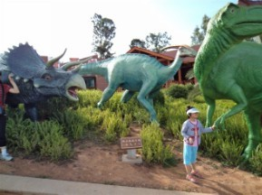
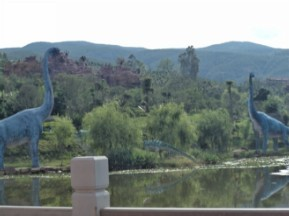
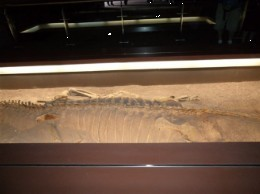
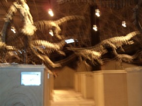
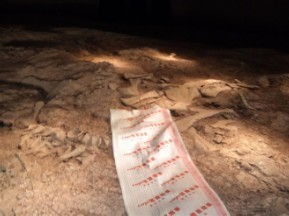
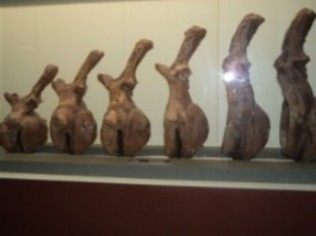
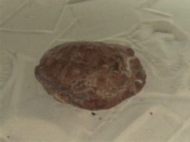

云南之旅5浏览恐龙谷
#1 云南之旅5浏览恐龙谷 作者：蓝天蓝 发表时间：2011-7-1 16:13:31
云南之旅5 浏览恐龙谷
时间2011.6.22.上午9:00
随着导游一路的介绍，我们终于到了第一个景点：恐龙谷，这里的恐龙样品还真不少，照了几张照片


这里的恐龙化石的发现地，恐龙化石博物馆里面有很多恐龙化石，还有发现恐龙化石的遗址，保存的都比较完好.
最大的恐龙化石 如下图：

各色的恐龙化石如下图:

发现恐龙骨的遗址 ，还没有完全挖掘出来的，如下图：

恐龙化石的腿骨化石如下图：

里面还有一个乌龟的化石 如下图：
［ 岑小鱼 于 2011-7-1 21:15:41 时花20金币送鲜花一朵］
［ 掌棋如烟 于 2011-7-3 8:38:21 时花20金币送鲜花一朵］